Java内存区域详解（重点）
如果没有特殊说明，都是针对的是 HotSpot 虚拟机。
本文基于《深入理解 Java 虚拟机：JVM 高级特性与最佳实践》进行总结补充。
常见面试题：
- 介绍下 Java 内存区域（运行时数据区）
- Java 对象的创建过程（五步，建议能默写出来并且要知道每一步虚拟机做了什么）
- 对象的访问定位的两种方式（句柄和直接指针两种方式）
前言
对于 Java 程序员来说，在虚拟机自动内存管理机制下，不再需要像 C/C++程序开发程序员这样为每一个 new 操作去写对应的 delete/free 操作，不容易出现内存泄漏和内存溢出问题。正是因为 Java 程序员把内存控制权利交给 Java 虚拟机，一旦出现内存泄漏和溢出方面的问题，如果不了解虚拟机是怎样使用内存的，那么排查错误将会是一个非常艰巨的任务。
运行时数据区域
Java 虚拟机在执行 Java 程序的过程中会把它管理的内存划分成若干个不同的数据区域。
JDK 1.8 和之前的版本略有不同，我们这里以 JDK 1.7 和 JDK 1.8 这两个版本为例介绍。
JDK 1.7：
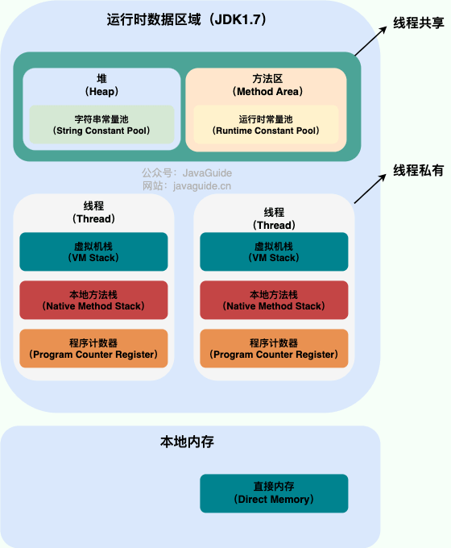
JDK 1.8：
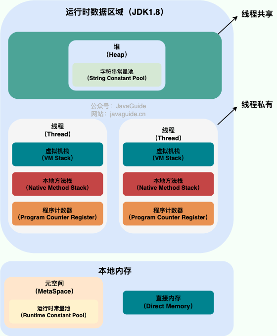
线程私有的：
- 程序计数器
- 虚拟机栈
- 本地方法栈
线程共享的：
- 堆
- 方法区
直接内存经常与这些区域一起讨论，但它不是《Java 虚拟机规范》定义的运行时数据区，也不应被当作规范中的“线程共享运行时数据区”。
Java 虚拟机规范对于运行时数据区域的规定是相当宽松的。以堆为例：堆可以是连续空间，也可以不连续。堆的大小可以固定，也可以在运行时按需扩展。虚拟机实现者可以使用任何垃圾回收算法管理堆，甚至完全不进行垃圾收集也是可以的。
程序计数器
程序计数器是一块较小的内存空间，可以看作是当前线程所执行的字节码的行号指示器。字节码解释器工作时通过改变这个计数器的值来选取下一条需要执行的字节码指令，分支、循环、跳转、异常处理、线程恢复等功能都需要依赖这个计数器来完成。
另外，为了线程切换后能恢复到正确的执行位置，每条线程都需要有一个独立的程序计数器，各线程之间计数器互不影响，独立存储，我们称这类内存区域为“线程私有”的内存。
从上面的介绍中我们知道了程序计数器主要有两个作用：
- 字节码解释器通过改变程序计数器来依次读取指令，从而实现代码的流程控制，如：顺序执行、选择、循环、异常处理。
- 在多线程的情况下，程序计数器用于记录当前线程执行的位置，从而当线程被切换回来的时候能够知道该线程上次运行到哪儿了。
程序计数器的生命周期与线程完全同步：
- 创建：随着线程的创建而创建。
- 销毁：随着线程的结束而销毁。
在执行 Java 方法（非 native）时，程序计数器记录的是 当前正在执行的 JVM 字节码指令的地址。当线程执行的是一个 native 方法（本地方法）时，程序计数器的值为 Undefined（未定义），因为此时执行的不是 JVM 字节码指令。
⚠️ 注意：程序计数器是 JVM 规范中唯一没有规定任何 OutOfMemoryError 情况的内存区域。规范只规定了这一结论，并未要求所有实现都采用某种固定大小的具体表示。
Java 虚拟机栈
与程序计数器一样，Java 虚拟机栈（后文简称栈）也是线程私有的，它的生命周期和线程相同，随着线程的创建而创建，随着线程的死亡而死亡。
栈绝对算的上是 JVM 运行时数据区域的一个核心，除了一些 Native 方法调用是通过本地方法栈实现的（后面会提到），其他所有的 Java 方法调用都是通过栈来实现的（也需要和其他运行时数据区域比如程序计数器配合）。
方法调用的数据需要通过栈进行传递，每一次方法调用都会有一个对应的栈帧被压入栈中，每一个方法调用结束后，都会有一个栈帧被弹出。
栈由一个个栈帧组成，而每个栈帧中都拥有：局部变量表、操作数栈、动态链接、方法返回地址。和数据结构上的栈类似，两者都是先进后出的数据结构，只支持出栈和入栈两种操作。
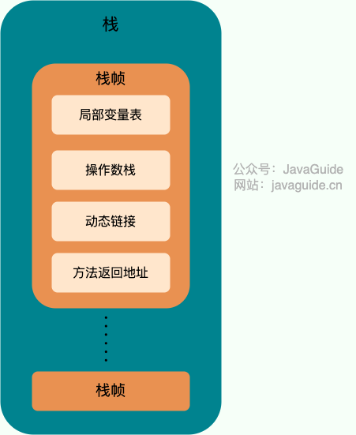
局部变量表 主要存放了编译期可知的各种数据类型（boolean、byte、char、short、int、float、long、double）、对象引用（reference 类型，它不同于对象本身，可能是一个指向对象起始地址的引用指针，也可能是指向一个代表对象的句柄或其他与此对象相关的位置）。
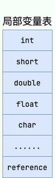
操作数栈 主要作为方法调用的中转站使用，用于存放方法执行过程中产生的中间计算结果。另外，计算过程中产生的临时变量也会放在操作数栈中。
动态链接是栈帧的一项功能。每个栈帧都持有指向当前方法所属类型的运行时常量池的引用，用于把方法代码中的方法符号引用转换为具体的方法引用，并把变量访问转换为对应运行时存储结构中的偏移；解析尚未确定的符号时还可能触发类加载。需要根据接收者实际类型选择虚方法实现的过程属于方法调用指令的动态分派，不能简单等同于这里的动态链接。
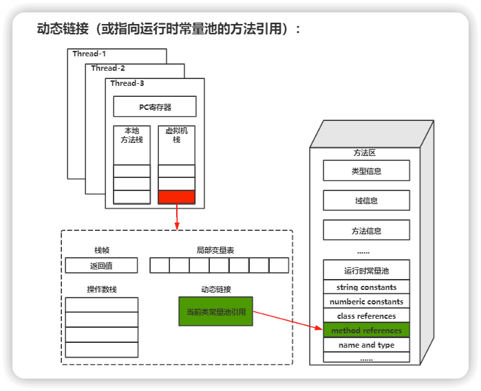
栈空间虽然不是无限的，但一般正常调用的情况下是不会出现问题的。不过，如果函数调用陷入无限递归的话，就会导致栈中被压入太多栈帧而占用太多空间，导致栈空间过深。那么当线程请求栈的深度超过当前 Java 虚拟机栈的最大深度的时候，就抛出 StackOverflowError 错误。
Java 方法有两种返回方式：
- 正常返回：执行 return 语句，返回值传递给调用者。
- 异常返回：方法执行过程中抛出异常且未被捕获。
不管哪种返回方式，都会导致栈帧被弹出。也就是说， 栈帧随着方法调用而创建，随着方法结束而销毁。无论方法正常完成还是异常完成都算作方法结束。
除了 StackOverflowError 错误之外，栈还可能会出现 OutOfMemoryError 错误，这是因为如果栈的内存大小可以动态扩展， 那么当虚拟机在动态扩展栈时无法申请到足够的内存空间，则抛出 OutOfMemoryError 异常。
简单总结一下程序运行中栈可能会出现两种错误：
StackOverflowError： 当线程执行所需的栈空间超过 JVM 允许的大小时，抛出StackOverflowError错误。OutOfMemoryError： 如果栈的内存大小可以动态扩展， 那么当虚拟机在动态扩展栈时无法申请到足够的内存空间，则抛出OutOfMemoryError异常。
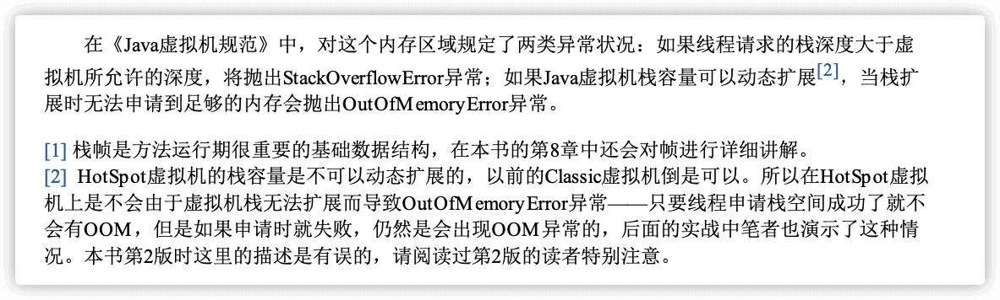
本地方法栈
和虚拟机栈所发挥的作用非常相似，区别是：虚拟机栈为虚拟机执行 Java 方法（也就是字节码）服务，而本地方法栈则为虚拟机使用到的 Native 方法服务。 在 HotSpot 虚拟机中和 Java 虚拟机栈合二为一。
执行本地方法时，虚拟机实现可以使用传统的本地栈（通常称为 C 栈）。《Java 虚拟机规范》没有规定本地方法栈必须采用与 JVM 栈帧相同的局部变量表、操作数栈和动态链接结构。
本地方法执行完毕后，相应的实现相关栈数据会被释放。本地方法栈也可能出现 StackOverflowError 和 OutOfMemoryError 两种错误。
堆
Java 虚拟机所管理的内存中最大的一块，Java 堆是所有线程共享的一块内存区域，在虚拟机启动时创建。此内存区域的唯一目的就是存放对象实例，几乎所有的对象实例以及数组都在这里分配内存。
Java 世界中“几乎”所有的对象都在堆中分配。不过，JIT 编译器可以基于逃逸分析进行标量替换，从而消除部分对象的实际分配。HotSpot 的这类优化不能简单表述为“对象直接在 Java 虚拟机栈上分配”。
Java 堆是垃圾收集器管理的主要区域，因此也被称作 GC 堆（Garbage Collected Heap）。从垃圾回收的角度，由于现在收集器基本都采用分代垃圾收集算法，所以 Java 堆还可以细分为：新生代和老年代；再细致一点有：Eden、Survivor、Old 等空间。进一步划分的目的是更好地回收内存，或者更快地分配内存。
在 JDK 7 及更早版本的 HotSpot 中，GC 通常按下面三部分介绍，其中永久代是方法区的实现，并不属于 Java 堆：
- 新生代内存(Young Generation)
- 老生代(Old Generation)
- 永久代(Permanent Generation)
下图所示的 Eden 区、两个 Survivor 区 S0 和 S1 都属于新生代，中间一层属于老年代，最下面一层属于永久代。
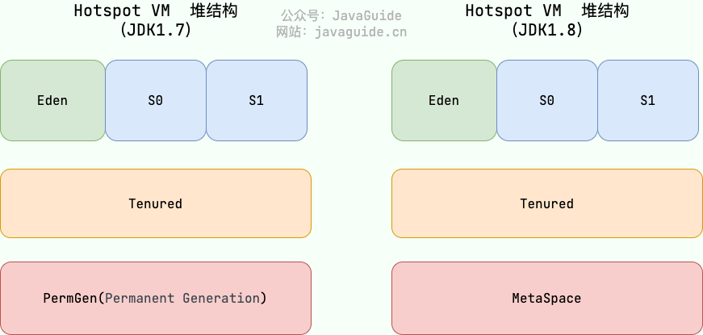
JDK 8 版本之后 PermGen（永久代） 已被 Metaspace（元空间） 取代，元空间使用的是本地内存。（我会在方法区这部分内容详细介绍到）。
大部分情况，对象都会首先在 Eden 区域分配，在一次新生代垃圾回收后，如果对象还存活，则会进入 S0 或者 S1，并且对象的年龄还会加 1（Eden 区->Survivor 区后对象的初始年龄变为 1）。对象达到晋升年龄阈值后会进入老年代，该阈值受收集器、自适应策略和 -XX:MaxTenuringThreshold 参数共同影响，并非所有收集器的默认值都是 15。对于采用 4 位年龄字段的经典分代收集器，该参数的上限是 15。
MaxTenuringThreshold of 20 is invalid; must be between 0 and 15为什么年龄只能是 0-15?
因为记录年龄的区域在对象头中，这个区域的大小通常是 4 位。这 4 位可以表示的最大二进制数字是 1111，即十进制的 15。因此，对象的年龄被限制为 0 到 15。
这里我们简单结合对象布局来详细介绍一下。
在 HotSpot 虚拟机中，对象在内存中存储的布局可以分为 3 块区域：对象头（Header）、实例数据（Instance Data）和对齐填充（Padding）。其中，对象头包括两部分：标记字段（Mark Word）和类型指针（Klass Word）。关于对象内存布局的详细介绍，后文会介绍到，这里就不重复提了。
这个年龄信息就是在标记字段中存放的（标记字段还存放了对象自身的其他信息比如哈希码、锁状态信息等等）。下面旧版 HotSpot 源码中的 markOop.hpp 展示了当时标记字（Mark Word）的结构；现代 JDK 的对应实现和对象头布局已经发生变化：
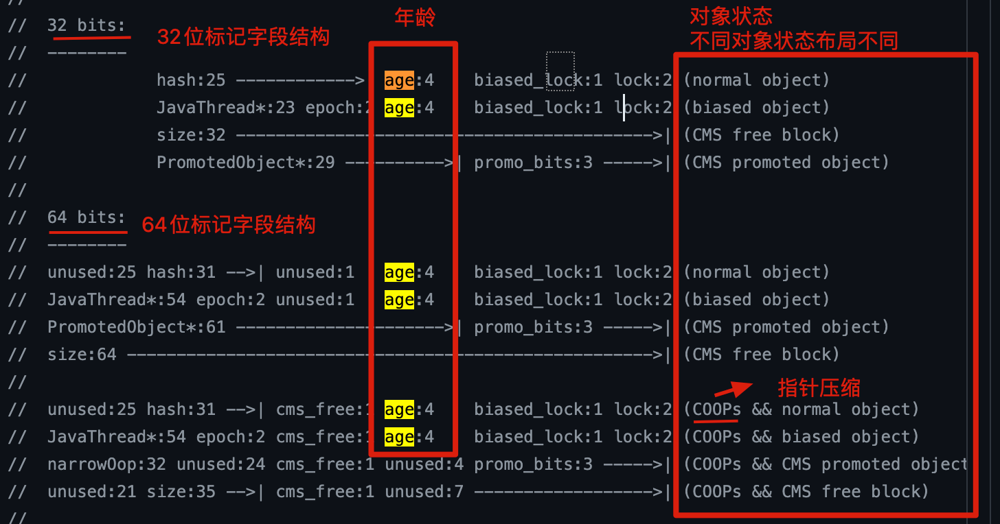
可以看到对象年龄占用的大小确实是 4 位。
🐛 修正（参见：issue552）：“Hotspot 遍历所有对象时，按照年龄从小到大对其所占用的大小进行累加，当累加到某个年龄时，所累加的大小超过了 Survivor 区的一半，则取这个年龄和
MaxTenuringThreshold中更小的一个值，作为新的晋升年龄阈值”。动态年龄计算的代码如下
uint ageTable::compute_tenuring_threshold(size_t survivor_capacity) { //survivor_capacity是survivor空间的大小 size_t desired_survivor_size = (size_t)((((double) survivor_capacity)*TargetSurvivorRatio)/100);//TargetSurvivorRatio 为50 size_t total = 0; uint age = 1; while (age < table_size) { total += sizes[age];//sizes数组是每个年龄段对象大小 if (total > desired_survivor_size) break; age++; } uint result = age < MaxTenuringThreshold ? age : MaxTenuringThreshold; ... }
堆这里最容易出现的就是 OutOfMemoryError 错误，并且出现这种错误之后的表现形式还会有几种，比如：
java.lang.OutOfMemoryError: GC Overhead Limit Exceeded：当 JVM 花太多时间执行垃圾回收并且只能回收很少的堆空间时，就会发生此错误。java.lang.OutOfMemoryError: Java heap space:假如在创建新的对象时, 堆内存中的空间不足以存放新创建的对象, 就会引发此错误。(和配置的最大堆内存有关，且受制于物理内存大小。最大堆内存可通过-Xmx参数配置，若没有特别配置，将会使用默认值，详见：Default Java 8 max heap size)- ……
方法区
方法区属于是 JVM 运行时数据区域的一块逻辑区域，是各个线程共享的内存区域。
《Java 虚拟机规范》只是规定了有方法区这么个概念和它的作用，方法区到底要如何实现那就是虚拟机自己要考虑的事情了。也就是说，在不同的虚拟机实现上，方法区的实现是不同的。
当虚拟机加载一个类时，它会从 Class 文件中解析出相应的信息，并将这些元数据存入方法区。具体来说，方法区主要存储以下核心数据：
- 类的元数据：包括类的完整结构，如类名、父类、实现的接口、访问修饰符，以及字段和方法的详细信息（名称、类型、修饰符等）。
- 方法的字节码：每个方法的原始指令序列。
- 运行时常量池：每个类独有的，由 Class 文件中的常量池转换而来，用于存放编译期生成的各种字面量和对类型、字段、方法的符号引用。
需要特别注意的是，以下几类数据虽然在逻辑上与类相关，但在 HotSpot 虚拟机中，它们并不存储在方法区内：
- 静态变量（Static Variables）：自 JDK 7 起，类静态变量与对应的
java.lang.Class对象一起存放在 Java 堆中。 - 字符串常量池（String Pool）：同样自 JDK 7 起，字符串常量池也移至 Java 堆中。
- 即时编译器编译后的代码缓存（JIT Code Cache）：JIT 编译器将热点方法的字节码编译成的本地机器码，存放在一个独立的、名为“Code Cache”的内存区域，而不是方法区本身。这样做是为了实现更高效的执行和内存管理。
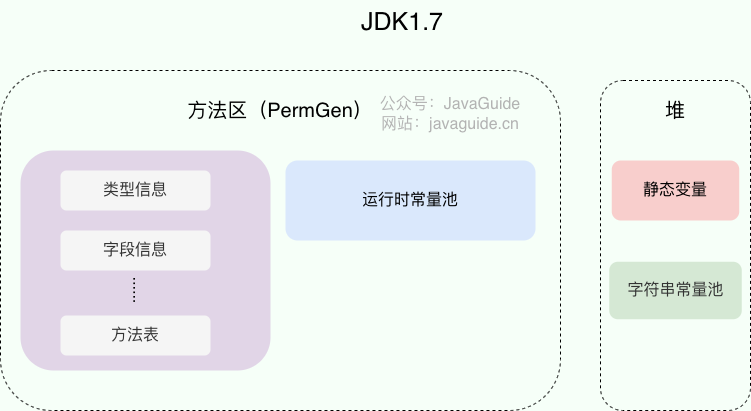
方法区和永久代以及元空间是什么关系呢？ 方法区和永久代以及元空间的关系很像 Java 中接口和类的关系，类实现了接口，这里的类就可以看作是永久代和元空间，接口可以看作是方法区，也就是说永久代以及元空间是 HotSpot 虚拟机对虚拟机规范中方法区的两种实现方式。并且，永久代是 JDK 1.8 之前的方法区实现，JDK 1.8 及以后方法区的实现变成了元空间。
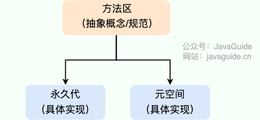
为什么要将永久代 (PermGen) 替换为元空间 (MetaSpace) 呢?
下图来自《深入理解 Java 虚拟机》第 3 版 2.2.5
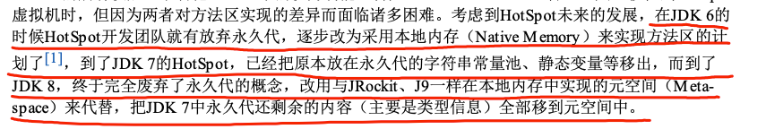
1、永久代的容量受 -XX:MaxPermSize 上限约束，这个上限可以配置；元空间改用本地内存，并可通过 -XX:MaxMetaspaceSize 限制。两者都可能溢出，实际风险取决于配置和类元数据的增长情况。
当元空间溢出时会得到如下错误：
java.lang.OutOfMemoryError: Metaspace
你可以使用 -XX:MaxMetaspaceSize 设置最大元空间大小。若不设置，类元数据空间可继续增长，直到受到可用本地内存等条件限制。-XX:MetaspaceSize 不是元空间的初始容量，而是触发元数据 GC 的初始高水位阈值，之后 JVM 会动态调整该阈值。
2、元空间里面存放的是类的元数据，这样加载多少类的元数据就不由 MaxPermSize 控制了, 而由系统的实际可用空间来控制，这样能加载的类就更多了。
3、在 JDK8，合并 HotSpot 和 JRockit 的代码时, JRockit 从来没有一个叫永久代的东西, 合并之后就没有必要额外的设置这么一个永久代的地方了。
4、永久代会为 GC 带来不必要的复杂度，并且回收效率偏低。
方法区常用参数有哪些？
JDK 1.8 之前永久代还没被彻底移除的时候通常通过下面这些参数来调节方法区大小。
-XX:PermSize=N //方法区 (永久代) 初始大小
-XX:MaxPermSize=N //方法区 (永久代) 最大大小,超过这个值将会抛出 OutOfMemoryError 异常:java.lang.OutOfMemoryError: PermGen相对而言，垃圾收集行为在这个区域是比较少出现的，但并非数据进入方法区后就“永久存在”了。
JDK 1.8 的时候，方法区（HotSpot 的永久代）被彻底移除了（JDK1.7 就已经开始了），取而代之是元空间，元空间使用的是本地内存。下面是一些常用参数：
-XX:MetaspaceSize=N //设置触发元数据 GC 的初始高水位阈值
-XX:MaxMetaspaceSize=N //设置 Metaspace 的最大大小与永久代很大的不同是，如果不指定 MaxMetaspaceSize，元空间没有由该参数设定的固定上限，持续的类元数据增长可能消耗大量本地内存。
运行时常量池
Class 文件中除了有类的版本、字段、方法、接口等描述信息外，还有用于存放编译期生成的各种字面量（Literal）和符号引用（Symbolic Reference）的 常量池表(Constant Pool Table)。
字面量是源代码中的固定值的表示法，即通过字面我们就能知道其值的含义。字面量包括整数、浮点数和字符串字面量。常见的符号引用包括类符号引用、字段符号引用、方法符号引用、接口方法符号。
《深入理解 Java 虚拟机》7.34 节第三版对符号引用和直接引用的解释如下：

常量池表会在类加载后存放到方法区的运行时常量池中。
运行时常量池的功能类似于传统编程语言的符号表，尽管它包含了比典型符号表更广泛的数据。
既然运行时常量池是方法区的一部分，自然受到方法区内存的限制，当常量池无法再申请到内存时会抛出 OutOfMemoryError 错误。
字符串常量池
字符串常量池 是 JVM 为了提升性能和减少内存消耗针对字符串（String 类）专门开辟的一块区域，主要目的是为了避免字符串的重复创建。
// 1.在字符串常量池中查询字符串对象 "ab"，如果没有则创建"ab"并放入字符串常量池
// 2.将字符串对象 "ab" 的引用赋值给 aa
String aa = "ab";
// 直接返回字符串常量池中字符串对象 "ab"，赋值给引用 bb
String bb = "ab";
System.out.println(aa==bb); // trueHotSpot 虚拟机中字符串常量池的实现可以在 src/hotspot/share/classfile/stringTable.cpp 中看到。现代 HotSpot 的本地 StringTable 使用并发哈希表，并通过弱句柄保存堆中的字符串对象，支持扩容、重哈希以及清理失效条目；-XX:StringTableSize 用于设置初始桶数量。因此，“固定长度数组 + 链表”的说法只适用于部分旧版实现，不能用于概括当前 HotSpot。
JDK1.7 之前，字符串常量池存放在永久代。JDK1.7 将字符串常量池和类静态变量移到了 Java 堆中。
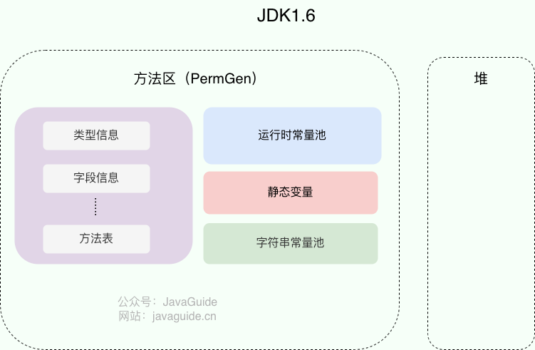
JDK 1.7 为什么要将字符串常量池移动到堆中？
主要是因为永久代（方法区实现）的 GC 回收效率太低，只有在整堆收集 (Full GC)的时候才会被执行 GC。Java 程序中通常会有大量的被创建的字符串等待回收，将字符串常量池放到堆中，能够更高效及时地回收字符串内存。
相关问题：JVM 常量池中存储的是对象还是引用呢？ - RednaxelaFX - 知乎
最后再来分享一段周志明老师在《深入理解 Java 虚拟机（第 3 版）》样例代码&勘误 GitHub 仓库的 issue#112 中说过的话：
运行时常量池、方法区、字符串常量池这些都是不随虚拟机实现而改变的逻辑概念，是公共且抽象的，Metaspace、Heap 是与具体某种虚拟机实现相关的物理概念，是私有且具体的。
直接内存
直接内存是一种特殊的内存缓冲区，并不在 Java 堆或方法区中分配，而是在本地内存中分配。具体分配机制属于虚拟机实现细节，并不等同于必须通过 JNI 分配。
直接内存并不是虚拟机运行时数据区的一部分，也不是虚拟机规范中定义的内存区域，但是这部分内存也被频繁地使用。而且也可能导致 OutOfMemoryError 错误出现。
JDK1.4 中新加入的 NIO（New I/O），引入了一种基于通道（Channel）与缓冲区（Buffer）的 I/O 方式。直接字节缓冲区可以在 Java 堆外分配内容，并通过 Java 堆中的 DirectByteBuffer 对象进行操作。JVM 会尽力直接在这种缓冲区上执行本地 I/O，从而在某些场景中减少中间缓冲区的数据复制；NIO 中只有可选择通道与 Selector 等部分提供非阻塞 I/O 能力，不能把整个 NIO 展开为 Non-Blocking I/O。
直接内存不计入 Java 堆，但仍会受到本机总内存、处理器寻址空间等条件的限制。对于 NIO 直接缓冲区，还可以通过 -XX:MaxDirectMemorySize 限制总分配量。
类似的概念还有 堆外内存。在一些文章中将直接内存等价于堆外内存，个人觉得不是特别准确。
堆外内存是分配在 Java 堆之外的内存的统称，底层通常使用操作系统提供的本地内存。它是否以及如何受到 JVM 或 JDK 管理，取决于具体的分配方式。例如，在 OpenJDK/HotSpot 中，DirectByteBuffer 对应的本地内存会关联 Java 堆中的缓冲区对象，并在对象变为不可达后通过 Cleaner 等机制参与清理。由于清理时机不由应用程序直接控制，使用堆外内存可以减少 Java 堆的压力，但仍然需要关注本地内存泄漏和 OutOfMemoryError。
HotSpot 虚拟机对象探秘
通过上面的介绍我们大概知道了虚拟机的内存情况，下面我们来详细的了解一下 HotSpot 虚拟机在 Java 堆中对象分配、布局和访问的全过程。
对象的创建
Java 对象的创建过程我建议最好是能默写出来，并且要掌握每一步在做什么。
Step1:类加载检查
虚拟机遇到一条 new 指令时，首先将去检查这个指令的参数是否能在常量池中定位到这个类的符号引用，并且检查这个符号引用代表的类是否已被加载过、解析和初始化过。如果没有，那必须先执行相应的类加载过程。
Step2:分配内存
在类加载检查通过后，接下来虚拟机将为新生对象分配内存。对象所需的内存大小在类加载完成后便可确定，为对象分配空间的任务等同于把一块确定大小的内存从 Java 堆中划分出来。分配方式有 “指针碰撞” 和 “空闲列表” 两种，选择哪种分配方式由 Java 堆是否规整决定，而 Java 堆是否规整又由所采用的垃圾收集器是否带有压缩整理功能决定。
内存分配的两种方式（补充内容，需要掌握）：
- 指针碰撞：
- 适用场合：堆内存规整（即没有内存碎片）的情况下。
- 原理：用过的内存全部整合到一边，没有用过的内存放在另一边，中间有一个分界指针，只需要向着没用过的内存方向将该指针移动对象内存大小位置即可。
- 使用该分配方式的 GC 收集器：Serial, ParNew
- 空闲列表：
- 适用场合：堆内存不规整的情况下。
- 原理：虚拟机会维护一个列表，该列表中会记录哪些内存块是可用的，在分配的时候，找一块儿足够大的内存块儿来划分给对象实例，最后更新列表记录。
- 使用该分配方式的 GC 收集器：CMS
选择以上两种方式中的哪一种，取决于 Java 堆内存是否规整。而 Java 堆内存是否规整，取决于 GC 收集器的算法是“标记-清除”，还是“标记-整理”（也称作“标记-压缩”），值得注意的是，复制算法内存也是规整的。
内存分配并发问题（补充内容，需要掌握）
在创建对象的时候有一个很重要的问题，就是线程安全，因为在实际开发过程中，创建对象是很频繁的事情，作为虚拟机来说，必须要保证线程是安全的，通常来讲，虚拟机采用两种方式来保证线程安全：
- CAS+失败重试： CAS 是乐观锁的一种实现方式。所谓乐观锁就是，每次不加锁而是假设没有冲突而去完成某项操作，如果因为冲突失败就重试，直到成功为止。虚拟机采用 CAS 配上失败重试的方式保证更新操作的原子性。
- TLAB： 为每一个线程预先在 Eden 区分配一块儿内存，JVM 在给线程中的对象分配内存时，首先在 TLAB 分配，当对象大于 TLAB 中的剩余内存或 TLAB 的内存已用尽时，再采用上述的 CAS 进行内存分配
Step3:初始化零值
内存分配完成后，虚拟机需要将分配到的内存空间都初始化为零值（不包括对象头），这一步操作保证了对象的实例字段在 Java 代码中可以不赋初始值就直接使用，程序能访问到这些字段的数据类型所对应的零值。
Step4:设置对象头
初始化零值完成之后，虚拟机要对对象进行必要的设置，例如这个对象是哪个类的实例、如何才能找到类的元数据信息、对象的哈希码、对象的 GC 分代年龄等信息。 这些信息存放在对象头中。 另外，对象头的具体布局与 JDK 版本和虚拟机配置有关；例如偏向锁在 JDK 15 起默认禁用，相关实现后来又被移除。
Step5:执行 init 方法
在上面工作都完成之后，从虚拟机的视角来看，一个新的对象已经产生了，但从 Java 程序的视角来看，对象创建才刚开始，<init> 方法还没有执行，所有的字段都还为零。所以一般来说，执行 new 指令之后会接着执行 <init> 方法，把对象按照程序员的意愿进行初始化，这样一个真正可用的对象才算完全产生出来。
对象的内存布局
在 Hotspot 虚拟机中，对象在内存中的布局可以分为 3 块区域：对象头（Header）、实例数据（Instance Data）和对齐填充（Padding）。
对象头包括两部分信息：
- 标记字段（Mark Word）：用于存储对象自身的运行时数据，如哈希码（HashCode）、GC 分代年龄、锁状态等；偏向线程 ID、偏向时间戳只适用于仍实现并启用偏向锁的旧版 HotSpot。
- 类型指针（Klass pointer）：对象指向它的类元数据的指针，虚拟机通过这个指针来确定这个对象是哪个类的实例。
实例数据部分是对象真正存储的有效信息，也是在程序中所定义的各种类型的字段内容。
对齐填充部分不是必然存在的，也没有什么特别的含义，仅仅起占位作用。 HotSpot 会按对象对齐边界分配对象，默认对齐通常是 8 字节，也可受 -XX:ObjectAlignmentInBytes 等配置影响。因此对象总大小需要补齐到对齐边界；对象头本身并不保证总是 8 字节的整数倍，例如启用压缩类指针时常见的对象头大小是 12 字节。
对象的访问定位
建立对象就是为了使用对象，我们的 Java 程序通过栈上的 reference 数据来操作堆上的具体对象。对象的访问方式由虚拟机实现而定，目前主流的访问方式有：使用句柄、直接指针。
句柄
如果使用句柄的话，那么 Java 堆中将会划分出一块内存来作为句柄池，reference 中存储的就是对象的句柄地址，而句柄中包含了对象实例数据与对象类型数据各自的具体地址信息。
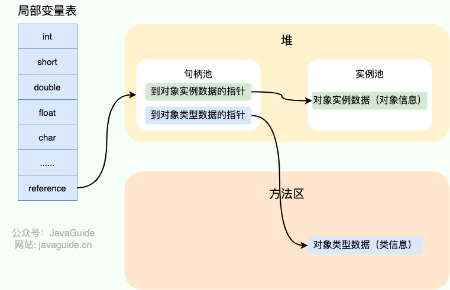
直接指针
如果使用直接指针访问，reference 中存储的直接就是对象的地址。
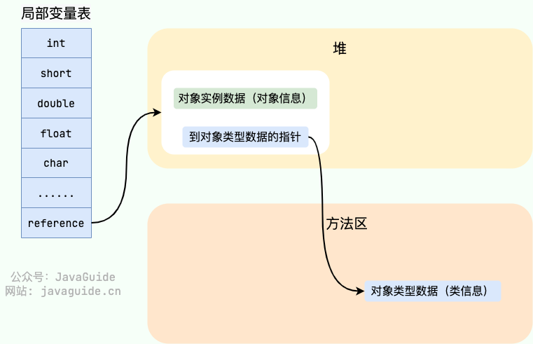
这两种对象访问方式各有优势。使用句柄来访问的最大好处是 reference 中存储的是稳定的句柄地址，在对象被移动时只会改变句柄中的实例数据指针，而 reference 本身不需要修改。使用直接指针访问方式最大的好处就是速度快，它节省了一次指针定位的时间开销。
HotSpot 虚拟机主要使用的就是这种方式来进行对象访问。
参考
- 《深入理解 Java 虚拟机：JVM 高级特性与最佳实践（第二版》
- 《自己动手写 Java 虚拟机》
- Chapter 2. The Structure of the Java Virtual Machine：https://docs.oracle.com/javase/specs/jvms/se8/html/jvms-2.html
- JVM 栈帧内部结构-动态链接：https://chenxitag.com/archives/368
- Java 中 new String（“字面量”） 中 “字面量” 是何时进入字符串常量池的？ - 木女孩的回答 - 知乎：https://www.zhihu.com/question/55994121/answer/147296098
- JVM 常量池中存储的是对象还是引用呢？ - RednaxelaFX 的回答 - 知乎：https://www.zhihu.com/question/57109429/answer/151717241
- http://www.pointsoftware.ch/en/under-the-hood-runtime-data-areas-javas-memory-model/
- https://dzone.com/articles/jvm-permgen-–-where-art-thou
- https://stackoverflow.com/questions/9095748/method-area-and-permgen
写在最后
如果内容对你有帮助的话，欢迎顺手给 JavaGuide 点一个免费的 Star 支持一下：GitHub | Gitee。
JavaGuide 已持续维护近七年，累计 6100+ 次提交，来自 620+ 位贡献者共同完善。你的 Star、反馈和 PR，都是这个项目继续更新的动力。
如果你正在准备后端/AI 应用开发面试，也可以了解一下我的知识星球，里面包括后端和 AI 实战项目、简历优化、一对一提问和高频考点资料，已经持续维护六年。